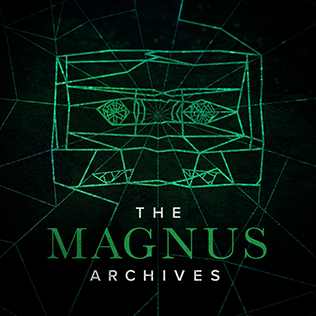

Podcasts
Podcasts are the rising medium of the digital age, not just for information relaying, but naturally for storytelling. Its ability to rely only on voice, sound and imagination naturally lends itself to the horror format, through 'true story', first person narration anthologies and more traditional audio dramas. Popular podcast shows such as Radio Rental, Spooked, The Magnus Archives and Old Gods of Appalachia thrive in this serialized format by combining atmosphere, performance and slow burn dread.

Magnum Archives, a audio drama podcast
At the same time, podcasts also became a common form of discussion and review of the horror genre, from movies to books and videogames. Many popular podcasts such as Deadmeat focus on analysis, interviews, and unpacking the genre's history, while building entire communities around the subject.
What makes horror podcasts appealing is how they do not require a big production or special effects to be effective. They instead must rely on timing, voice and the listener's own ability for imagination. The medium continues to grow as one of the most flexible and immersive ways to experience horror.